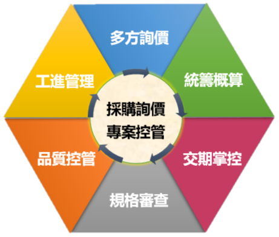

關於我們

起暘科技工程創立於 2006 年四月，提供水電消防、空調通風等機電工程整合規劃與施工，承攬多項集合式住宅、學校校舍、百貨商場與公共工程之大型專案。
秉持「進步(Progress)」、「品質(Quality)」、「服務(Service)」三大核心經營理念，起暘結合精良的自有工班與管理人員，依循法規，為大眾打造安全、節能且舒適的生活環境。
經營理念
- Progress：以客戶需求為出發，持續精進成長。
- Quality：沒有最好只有更好，優化施工與維修品質。
- Service：專案控管內外兼具，滿足客戶多面向需求。
專業證照
自來水管承裝業
有效日期：114年6月8日

甲等水管公會
有效日期：114年12月31日
甲級電器公會
有效日期：114年12月31日
甲級電器承裝業
有效日期：114年6月7日
甲等冷凍空調公會
有效日期：114年12月31日
×